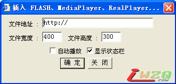

提关于音乐播放的意见
#1 提关于音乐播放的意见 作者：屏蔽 发表时间：2009-4-14 18:04:49
这一段时间上iwzq，看到许多帖子内嵌了音乐自动播放。
首先，这是网站技术上的一个提升，是件好事；但是，我在上网的时候习惯性地听自己的音乐，如果突然开了帖子又进来一段音乐，其实是很困扰的一件事情；有的时候不插耳机，音乐放出来也是十分影响周围人的学习和工作的。如果一下开的网页比较多，逐个查找音乐帖是个非常麻烦和费时间的事情，只能先把总开关关掉再来处理，当时的状态就是手忙脚乱的。从另一个角度来看，过多的音乐播放是很占用网络资源的。
目前我见到的帖子中的音乐都是自动播放的形式而不是手动播放，我不知道技术上有没有可能解决这个问题，如果不可能的话还是希望在对应的主题标题中予以提示，那么特别注意的一点就是希望在回帖中不要插入音乐。
其实提出这个意见不仅是因为我个人的感受问题，在我常去的另一个论坛也出现过这个问题，一段时间内音乐播放贴风行，而且基本都是自动播放，很多人都提出了意见，最后论坛高层将除了每个主题第一帖内的音乐播放（如自动播放必须提示）全部禁止了。
插入音乐的本意是好的，或许作者认为可以提升气氛，但每个人喜欢的音乐风格都不同；针对一个五子棋网站来说，或许音乐（特别是自己不感冒的音乐）对于逻辑的思考或许并无益处。
以上是一家之言，版主们姑且一听吧，盼复。
：）
#2 Re:提关于音乐播放的意见 作者：学生刀 发表时间：2009-4-14 18:07:26
帖子标记 弹出对话 询问是否开启 Y N
?
进入
#3 Re:提关于音乐播放的意见 作者：掌棋如烟 发表时间：2009-4-14 18:46:48
这个问题。。。
在爱五子棋站内编辑帖子中插入音乐文件的时候，不是可以选择是否自动播放的么，
是发帖子的人选择的是否自动播放音乐，而不是该网站没有手动播放的功能。
另外在用代码写帖子的时候，音乐代码是可以控制手动播放或者自动播放的，比如说AUTOSTART="true"和AUTOSTART="false" 或者用"0"，"1"都是控制自动或手动播放的。
所以说这个问题不存在技术上的问题，只是楼主个人喜欢与否的问题而已。
PS：而我本人在此发过的一个文学方面的帖子则是带有自动播放音乐的，这仅是我个人所喜欢的方式，喜欢的朋友可以听，不喜欢朋友的可以关，大家都应有权利。
诚如，针对一个五子棋网站来说，技术才是主要，那么原创征文部分里的文学类别的帖子里即使有音乐，大概也对看技术贴的朋友的思考造成不了什么困扰，我心安了。
［ 有志青年 于 2009-4-15 9:00:31 时奖励此帖[金币加 20 威望加1］
#4 Re:提关于音乐播放的意见 作者：失落刀 发表时间：2009-4-14 18:48:01
楼主，我也强烈困扰帖子自动放音乐，以及上传签名图片大的夸张这些情况。
目前我选择忍受，你提出来了，谢谢你和支持你。
#5 Re:提关于音乐播放的意见 作者：裁决殿雪月 发表时间：2009-4-14 18:54:55
不喜欢加音乐#6 Re:提关于音乐播放的意见 作者：下棋思思 发表时间：2009-4-15 8:22:45
本人也十二分反对插入自动播放音乐，七分不喜欢滥插音乐，但对于插入意境与文字十分相符的音乐还是持肯定的态度且为选择播放。能十分相符、能让人喜欢的必然相当费心，也是比较少的。#7 Re:提关于音乐播放的意见 作者：学生刀 发表时间：2009-4-15 8:33:09
音乐可以选择播发 没有什么问题吧
#8 Re:提关于音乐播放的意见 作者：爱下不下 发表时间：2009-4-15 8:53:15
我上网都是关着音箱的，没有这个困扰，呵呵#9 Re:提关于音乐播放的意见 作者：有志青年 发表时间：2009-4-15 9:02:39

目前插入音乐默认是不自动播放的，但有个可选“自动播放”。
现在的问题是是否改成强制不自动播放（对于懂代码的人来说没用）
#10 Re:提关于音乐播放的意见 作者：启蒙 发表时间：2009-4-15 10:42:42
我也很反感在贴子里加音乐，因为我和LZ的习惯一样，喜欢听着自己的音乐
当然如果作者想在贴里加也不是不可以，不过你要在标题里事先说明最好！
#11 Re:Re:提关于音乐播放的意见 作者：屏蔽 发表时间：2009-4-15 13:03:14
引用：
原文由 有志青年 发表于 2009-4-15 9:02:39 :目前插入音乐默认是不自动播放的，但有个可选“自动播放”。
现在的问题是是否改成强制不自动播放（对于懂代码的人来说没用）
强制倒是没有必要，代码这种东西永远是人们手中的玩物。我只希望有个提示就好了，另外回帖中最好不要插音乐了，想想就知道同一贴播两个不同的音乐是一件多么惨绝人寰的事情呵~
不过照目前的情况来看，大家都似乎很有意识地选上自动播放？
或者，希望大家能够把音乐插件放在最上方，这样关闭也容易些。
#12 Re:提关于音乐播放的意见 作者：有志青年 发表时间：2009-4-15 13:30:44
呵呵，我曾访问过不少论坛，可以听到音乐，却看不到播放界面（大小为0），阅读者想停止声音都不行，郁闷的一塌糊涂。
我使用世界之窗浏览器，最下方有个关闭网页声音的快捷方式，点击之后，凡是网页上的声音都不会播放了。
#13 Re:提关于音乐播放的意见 作者：小丸.net 发表时间：2009-4-15 13:42:00
道高一丈，磨高一尺#14 Re:提关于音乐播放的意见 作者：掌棋如烟 发表时间：2009-4-15 21:47:44
或许你们再尝试一下Esc键哈
#15 Re:提关于音乐播放的意见 作者：掌棋如烟 发表时间：2009-4-16 17:15:36
恩，根据本人常年泡音乐论坛的经验来看，多数情况下，要停止帖子播放N首音乐，就用左上角的“Esc”键就好了，但此种方法不适用与flash自带声音，只能停止播放器声音。
当然最彻底的方法就是有志说的那样——关闭浏览器的网页播放声音选项。
#16 Re:提关于音乐播放的意见 作者：小棋情 发表时间：2009-4-16 18:27:56
不是可以自己关掉么？看帖的时候可以选择把音乐关掉的啊#17 Re:Re:提关于音乐播放的意见 作者：屏蔽 发表时间：2009-4-16 19:39:06
引用：
原文由 小棋情 发表于 2009-4-16 18:27:56 :
不是可以自己关掉么？看帖的时候可以选择把音乐关掉的啊
前面我说了一下，找音乐帖很累的……而且突然出现音乐很吓人……
#18 Re:提关于音乐播放的意见 作者：逍遥一梦 发表时间：2009-4-16 19:47:30
五子网站里居然讨论这个问题!
貌似去QQ空间设置这些休闲娱乐的东东好些.这里应该严谨些!
#19 Re:提关于音乐播放的意见 作者：安娜制作所 发表时间：2009-5-4 11:18:24
完善架构,更加人性化!
#20 Re:提关于音乐播放的意见 作者：孤傲 发表时间：2009-5-15 10:13:25
不爱看那些加音乐文字然后还有朗诵的帖子 个人觉的那个词澡都太做作表拍我砖哈,只是个人感觉,说出来也是充许的哈~
个人觉的那个词澡都太做作表拍我砖哈,只是个人感觉,说出来也是充许的哈~